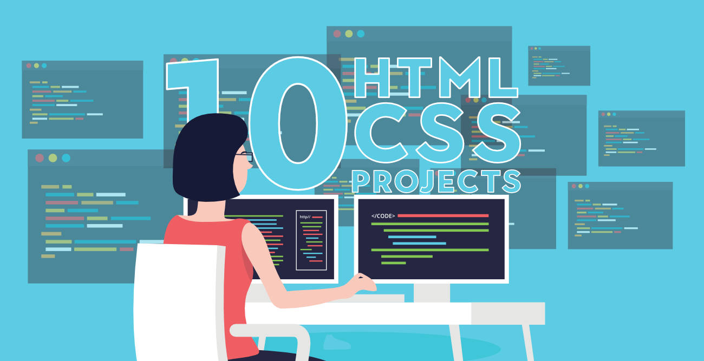

Top 10 Projects For Beginners To Practice HTML and CSS Skills
Learning to code is always exciting and fun for everyone and when it comes to stepping into the programming world most of the people start with the easiest thing HTML and CSS Every beginner's coding journey in frontend starts with these two basic building blocks and you need to be creative when it comes to designing a beautiful application.
Initially, beginners enjoy making buttons, adding the links, adding images, working with layout and a lot of cool stuff in web designing but when it comes to making a project using only HTML and CSS they get stuck and confuse about what they should make to practice all these stuff. Afterall their knowledge is just limited to HTML and CSS. No matter what after learning everything at some point you will realize that making a project is important to practice HTML and CSS skills. You need to check how HTML and CSS work together to design a beautiful frontend application. So the question is what are some beginner-friendly projects you can build to practice everything you have learned…Let's discuss that.
1. A Tribute Page
The simplest website you can make as a beginner is a tribute page of someone you admire in your life. It requires only basic knowledge of HTML and CSS. Make a webpage writing about that person adding his/her image. On the top of the webpage, add the image and name of the person and below that give layout for the rest of the details. You can use paragraphs, lists, links, images with CSS to give it a descent look. Add a suitable background color and font style on your webpage. Most of the parts you can make using HTML but to give it a better look using a bit of CSS. Take help from the link given below.
My Tribute Page2. Webpage Including Form
Forms are always an essential part of any project and you will be working with a lot of forms in most of the applications so why not practice it earlier and test your knowledge. Once you get familiar with the input field or basic tags in HTML to create a form make a project using all those tags. How to use a text field, checkbox, radio button, date, and other important elements in a single form. You will be learning how to give a proper structure to a webpage while creating a form. Knowledge of HTML/HTML5 is good enough but you can use a bit of CSS to make the project look better. Take help from the links given below.
Survey Form3. Parallax Website
A parallax website includes fixed images in the background that you can keep in place and you can scroll down the page to see different parts of the image. With basic knowledge of HTML and CSS, you can give a parallax effect to a website. Using the parallax effect in web designing is really popular and it gives beautiful look and feels to the webpage. Give it a try and divide the whole page into three to four different sections. Set 3-4 background images, align the text for different sections, set margin and padding, add background-position and other CSS elements and properties to create a parallax effect. You can take help from the link given below.
Parallax Website4. Landing Page
A landing page is another good project you can make using HTML and CSS but it requires a solid knowledge of these two building blocks. You will be using lots of creativity while making a landing page. You will practice how to add footer and header, create columns, align-items, divide the sections and a lot of things. You will have to use CSS carefully keeping in mind that different elements do not overlap with each other. You will also take care of color combinations, padding, margin, space between sections, paragraphs, and boxes. Color combinations should go well with each other for different sections or backgrounds.
5. Restaurant Website
Showcase your solid knowledge of HTML and CSS creating a beautiful webpage for a restaurant. Making a layout for a restaurant will be a bit complicated than previous project examples. You will be aligning the different food items and drinks using a CSS layout grid. You will be adding prices, images and you need to give it a beautiful look and feel as well using the proper combination of colors, font-style and images. You can add pictures gallery for different food items, you can also add sliding images for a better look. Add links for redirection to internal pages. Make it responsive setting a viewport, using media queries and grid. You can take help from the link given below.
Restaurant Website6. An Event or Conference Webpage
You can make a static page holding an event or conference. People who are interested in attending the conference create a register button for them. Mention different links for speaker, venue and schedule at the top in the header section. Describe the purpose of the conference or the category of people who can get benefit from this conference. Add an introduction and images of the speaker, venue detail and the main purpose of the conference on your webpage. Divide the page into sections, add header and footer showcasing the menu. Use proper background color that can go well with each other for various sections. Choose a descent font style and font color that matches the theme of your web page. It requires HTML/HTML5 and CSS knowledge in depth. You can take help from the link given below.
Restaurant Website7. Music Store Page
If you are a music lover you can make a webpage for it. It requires HTML5/CSS3 knowledge. Add a suitable background image describing the purpose or what the page is all about. In the header section add different menus. Add buttons, links, images and some description about the collection of songs available. At the bottom mention the links for shopping, store, career or contact details. You can also add other features on your webpages such as a trial option, gift cards or subscription. Make it responsive setting viewport or using media queries and grid. You can take help from the link given below.
Event webpage8. Photography Site
If you have in-depth knowledge of HTML5 and CSS3, you can make a one-page responsive photography site. Use flexbox and media queries for responsiveness. Add the company name with an image (related to photography) on the top (landing page). Below that showcase your work adding multiple images. Mention the contact detail of the photographer at the bottom (footer). Add a button to view your work. This button will directly bring you down to the images section. You need to take care of the margin, padding, color combination, font-size, font-style, image size and styling of a button. You can take help from the link given below.
Image gallery9. Personal Portfolio
With knowledge of HTML5 and CSS3, you can also create your portfolio. Showcase your work samples and skills in your portfolio with your name and pictures. You can also add your CV there and host your complete portfolio on GitHub account. In your header section mention some menus like about, contact, work or services. At the top add one of your images and introduce yourself there. Below that add some work samples and at last (footer) add contact information or social media account. You can take help from the links given below.
Simple portfolio Portfolio gallery10. Technical Documentation
If you have a little bit of knowledge of Javascript then you can create a webpage of technical documentation. It requires knowledge of HTML, CSS and basic javascript. Divide the whole webpage into two sections. The left side creates a menu with all the topics listed from top to bottom. Right side you need to mention the documentation or description for the topics. The idea is once you click on one of the topics in the left section it should load the content on the right. For click, you can use either javascript or CSS bookmark option. You don't need to make it too fancy, just give it a simple and descent look, that looks good for technical documentation. You can take help from the links given below.
Technical Documentation